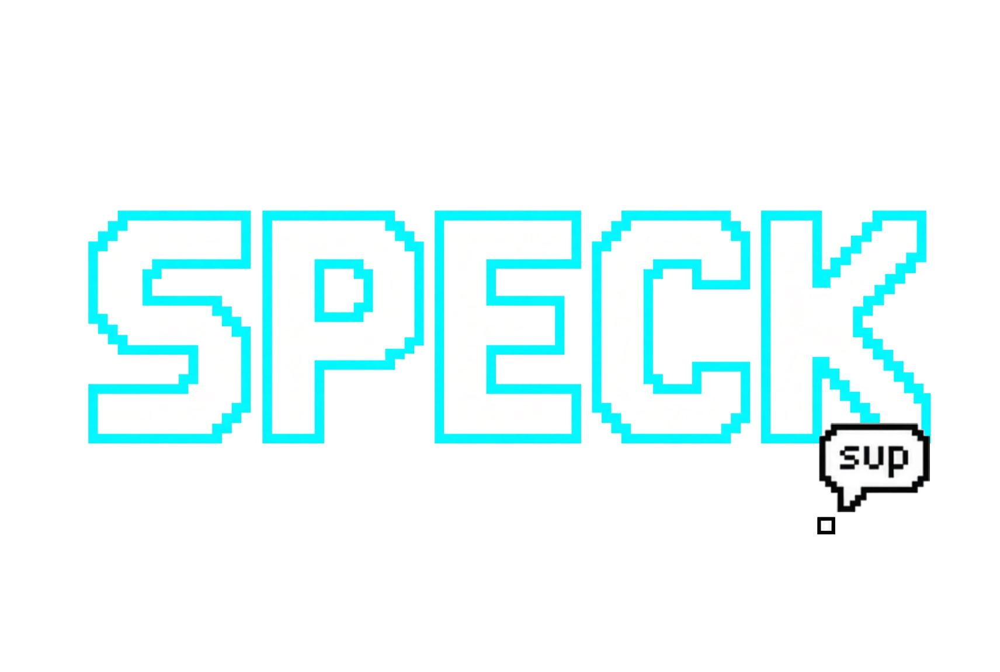

One Shared World
Everyone is in the same place at the same time. A bridge you build, a sign you leave, a house you raise — they stay there for whoever walks past next.

Persistent Shared World • Exploration • Crafting • Building
You are one pixel in a world 72,000 of them across. Walk it, dig under it, design every object you own, and build a home that stays on the map after you log off.
Start small. Find your place. Build something that lasts.
Speck is one shared, persistent world. You occupy a single pixel on a map about 72,000 cells wide — roughly an hour at a run from one coast to the other — across nine biomes, oceans, island chains and mountain belts. Press a key at your own front door and you are inside a full interior.
Gather, craft, cook, plant a garden, hire hands, take a boat out, cut a cave open and keep the shape you left it in. Fight with a bow that shows you its own accuracy, or take a spear down four floors to something the game openly tells you it does not expect you to beat alone.
Two rules run underneath all of it. Derive, don’t store — terrain, towns, caves, creature voices, music and the people walking the streets are all worked out from a seed and a clock, so two machines agree without sending a byte. And distance is the difficulty — the further from anyone you go, the better the material, the busier the wild, the sharper its eyes, and the harder it is to simply walk away.
Everyone is in the same place at the same time. A bridge you build, a sign you leave, a house you raise — they stay there for whoever walks past next.
72,000 cells coast to coast. Nine biomes with their own colour, footing and resources, and rivers with fordable gaps. A minimap that follows you, and an atlas that zooms from planet down to street.
Caves up to four floors deep, always fully connected, the rock climbing a grade every floor. You see to the edge of your light. Mine through a wall and the shape you cut is still there tomorrow — and a chamber you carve is a room you can furnish.
One editor for everything: portraits, furniture, decor, building parts, emblems, props, fences. 176 templates across 10 categories, plus patterns, stamps and your own palettes. Repaint a chair however you like — it is still a chair.
A plot with a yard, a garden and a fence outside, and a full interior inside. Save any rectangle as a blueprint and stamp it again anywhere. Lock your front door, and hand a key to someone standing there.
Hire helpers across nine trades — forage, woodcut, mine, fish, hunt, scout, farm, keep and guard. They work while you are logged out, and potter about the yard while they do it.
Aim bows, settle your hand for a cleaner shot, throw spears through groups, and step out of enemy wind-ups. Deeper journeys lead to multi-phase bosses built for prepared adventurers.
Enter towns filled with residents, shops, waystones and fighting rings. Prices follow local scarcity, while better materials wait farther from safety — making travel and trade worth the risk.
August 2026 — Speck is a full game running end to end in private development. The world, the studio, the homestead, the helpers, combat, bosses, towns, the economy and the nine-chapter story are all in and playable together, and the whole story is walked start to finish by an automated test on every build.
Recent passes added marrowstone at the bottom of the material ladder, the deep boss four floors down, hireable hands with spears who change who a boss walks toward, terrain sculpting with named landmarks, a 67-piece prop set with a scatter brush, and 1,650 town residents who cost the network nothing — both machines work out where each of them is standing from the same clock.
What is not done is the part that needs a crowd. Speck is deliberately being built solo until the world is worth inviting people into. The public server comes after that, not before.
An honest, complete list. Everything on the right is not built yet rather than broken — and a few of them are being held back on purpose, with reasons.
All of this works right now, in one world, together.
Grouped by what is actually in the way, not by how badly I want it.
These are not oversights. Each one is a decision, and here is the reasoning.